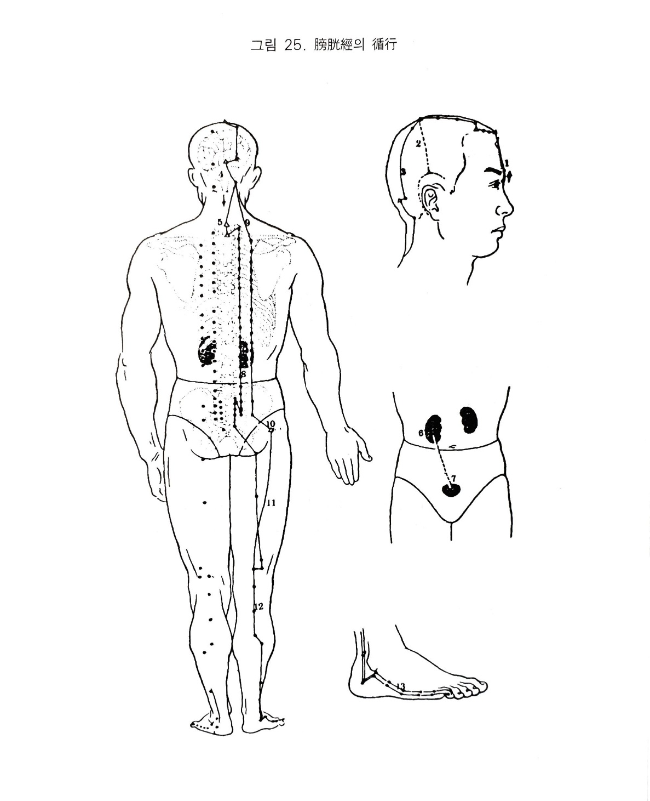

족태양방광경
10. 족태양방광경
1) 족태양방광경의 순행
방광경은 소장경의 지락에서 연결되어 내안각의 청명에서 시작된다. 상행하여 독맥의 신정과 교회하고 좌우로 곡차로 갈라 이어져 상행하여 독맥의 백회와 교회한다. 직행하는 맥은 두정에서 뇌로 들어가 다시 나와서 후두부로 내려간다.
하나의 지락은 백회에서 갈라져 나와 이의 상각부로 주행하여 담경의 곡빈. 솔곡. 부백. 두규음. 완골 등에 이러진다. 본경은 후두부에서 하행하여 독맥의 대추. 흉도와 교회하고 척추를 끼고 척추양방 1.5촌 거리를 직하하면서 각 장부의 유혈을 거쳐 요부로 내려가서 내부로 깊이 들어와 신장에 락하고 방광에 속한다.
본경은 요산부의 상. 차. 중. 하료를 거쳐 신부하위를 지나 위중으로 이어져 하행하여 비복근내를 통과 외과의 뒤쪽을 지나 족소지외측의 말단에서 끝난다. 하나의 지락은 천추에서 갈라져 척추양방 각 3촌으로 내려와 복부와 질변까지 와서 담경의 환도와 교회하고 대퇴외측의 후면을 따라 직하하여 슬와에서 본경과 합류한다.
2) 방광경의 병증
(1) 호흡기계
족태양 방광경은 배부의 표를 받고 있는데, 사기가 들어오면 처음 피모에서 사기와 정기가 서로 다투어 한열이 발생한다.
태양학은 한학하여 한다열소하므로 요부. 배부. 두부에 통증이 발생한다. 방광경이 허한해지면 풍을 싫어한다.
(2) 소화기계
방광이 풍사를 받으면 그 옆에 소장으로 옮겨져 위가 메슥메슥해진다.
방광경이 목내자에서 시작되니 여기서 사기가 있으면 눈이 노랗게 된다.
(3) 순환기계
방광경이 목내자에서 시작하여 두부의 중요부를 지나 흉에 들어갔다 다시 후두부로 내려가는데 중풍. 반신불수는 이 경락상으 병변에서 오는 것이다.
(4) 흉협복통류
방광은 수부로서 수액 제회지처(수액이 모이는 곳)이다. 그러므로 기화작용이 실조되면 소복이 불러오면서 고통스럽고 통증도 오며 소변배설도 잘되지 않는다.
(5) 운동기계
방광경락이 목내자에서 시작하여 머리를 돌아 후두항부를 거쳐 견부에서 척추양방 1.5촌 또는 3촌 거리를 내려가 요부에 이르니 이 경락상에 병사가 생기면 동통. 근급. 열감 등이 생긴다. 그러므로 눈이 빠질 듯 하거나 목덜미가 이프거나 뻣뻣하고 어깨가 올라가지 않으며 열이 나는 것 또한 배통. 각궁반장. 척강. 요통. 좌골통. 위중통과 구급. 전근. 외과후연. 족오지 등의 동통. 근급은 방광경과 관계가 있다.
(6) 안이비인후구계
방광병은 목내자에서 시작하여 비근부 가까이 지나게 된다. 그러므로 그 기시점에 병사가 침입하면 누낭부에 파급되어 눈물이 나며, 비근부에 병사가 들면 코가 막히고 코피가 난다. 백회에서 지맥이 갈라져 이후에 분포하므로 이롱이 발생하는데 이는 이가 신과 방광의 규가 되기 때문이다. 신과 방광의 오액이 타이므로 방광이 허약해지면 다타한다.
(7) 비뇨기계
수곡이 위로 들어가면 그 중 수분을 갈라내서 하초인 방광으로 보내므로 방광을 “주도지관“이라고 한다. 방광은 진액을 저장하였다가 기화작용에 의해 소변으로 배출시킨다. 따라서 방광에 병사가 생기면 소복이 불러지며 괴롭고 소변이 나올 듯 하면서도 잘 나오지 않는다.
방광이 허냉하면 소변이 자주 마렵고 참지 못하며 오줌 나오는 것도 모르게 저절로 나온다.
이와 반대로 실열이 방광에 있으면 소변불통하다.
경락상으로 볼 때 척추양방 1.5촌 으로 내려온 방광경은 요부로 내려가 내부 깊숙이 들어와서 신장과 연결되며 방광에 속한다.
(8) 생식기계
방광경은 배부에서 각 장부의 유혈을 거쳐 내려오며 요선부에서는 상. 차. 중. 하료를 통과하고 있는데, 이 부위는 생식기와 관련된 신경이 나오는 곳이다. 또한 신과 방광은 표리관게를 이루는데 신장은 신정의 바탕이 되므로 방광이 허하면 정력이 약해지고 대하가 생기며, 이 부위에 실열이 있으면 성기에 염증이 생긴다.
(9) 정신계
방광경이 이마에서 머리로 올라가 두정에서 뇌로 들어갔다 나와 뒷머리로 내려와 목덜미로 지나가므로 방광경락에 병사가 있으면 두통. 현훈. 두항통. 전광 등이 일어난다.
(10) 기타
방광경은 상. 차. 중. 하료를 지나 미저골의 양방에 있는 회양을 지나서 대퇴후부로 내려간다. 회양은 장강혈의 접근혈로 여기에 혈액순환이 잘되지 않으면 치. 치창이 생긴다.

오수혈
지음(정,금)
제5지외측의 발톱뿌리부분에서 1푼 떨어진 곳이 지음혈이니 옆으로 찌르면 된다. 또한 지음혈은 수경중의 금혈이기 때문에 방광경의 모격이 되므로 방광허증에 보한는 혈이다. 오행학상으로는 69난의 치료원칙에 따라 방광허증에 지음을 보하는 방법도 있고 지음과 상양을 같이 보하는 방식도 있다.일반적으로는 눈병. 콧병에 쓰여지고 뒷목이 강직되었을 때 지음에서 사열하면 속효가 있다.
또한 반신불수의 통기혈로서 마비된 쪽 지음을 강자극하면 잠시나마 못쓰는 다리가 움직이게 된다. 기타 가슴이 답답할 때, 두통, 현훈 증세나 소변이 시원스럽지 않을 때에도 쓰인다.
통곡(형,수)
제5지본절의 외측 전함중 즉 새끼발가락의 외측을 만져보면 관절부는 불쑥 나와 있다. 그 관절의 뒷쪽 함중은 속골이요, 앞쪽(발톱쪽)의 들어간 곳이 통곡혈이니 옆에서 뼈밑쪽으로 찌르면 된다. 통곡혈은 혈명 그대로 수경중의 수혈이기 때문에 오행원리를 바탕으로 하는 경락조정 즉 허실보사에는 방광경을 대표하는 주격혈이 되며 일반치법상에서는 혈압으로 인한 두통, 현훈, 뒷목 아플 때,
눈이 흐릴 때나 콧피가 나는 데에도 쓰이지만 방광의 배뇨이상이나 방광경의 소통장애에서 오는 등. 허리. 다리의 이상에도 좋으며 만성의 위장장애에 유효함은 복부에 있는 신경의 통곡혈과도 동명이혈로서의 공통성이 있는 것으로 본다.
속골(수,목)
다섯째 발가락의 본관절부위는 불룩히 나와 닜는데 그 본절의 외릉부를 눌러서 조금 들어간 곳이 혈이니 옆에서 뼈 밑쪽으로 찌른다. 요척통이나 하지신경의 여러가지 증세, 혈압상승시의 두통. 현훈이나 전. 광. 배창(등창)등에 쓰이고 오행학상으로는 방광실증에 사하는 혈이다.
곤륜(경,화)
바깥쪽 복사뼈의 상방3촌인데 비골과 아키리스건의 사이가 된다. 곽란, 하지의 통증이나 불인상태에도 쓰이지만 요통이나 좌골신경통인 때 하지의 통증이 담경과 방광경의 사이가 아플 경우 특히 좋은 혈임을 첨기한다.
위중(합,토)
엎드려서 무릎을 쭉 펴고 오금의 주름살 한 가운데나 자세히 눌러보면 힘줄과 혈관이 복잡하니 힘줄 등을 상하지 않도록 할 것이다. 옛날에는 길을 가다 동료의 요통이 생기면 담벼락에 팔을 걸치고 세운 다음 위종에서 사혈을 하면 즉시 나았다고 한다. 혈압이 상충시에는 위중사혈이 좋은 구급법이며 제문헌에 의하면 위중의 사혈법이 요통, 난산, 다리의 부종, 월경불순, 악성피부경,
매독에 쓰여지며 나병에도 유효하다고 하였다. 감기요통이 심해서 위중과 인중에 약10분간 유침을 하였더니 밤새 땀이 흘러 아침에 개운함을 경험한다. 기타 좌골신경통이나 오금이 땡길 때도 쓰이지만 위중자리가 불거지는 슬관절이상도 있으니 살필 필요가 있다고 본다.